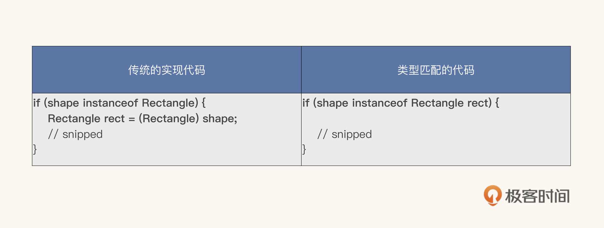
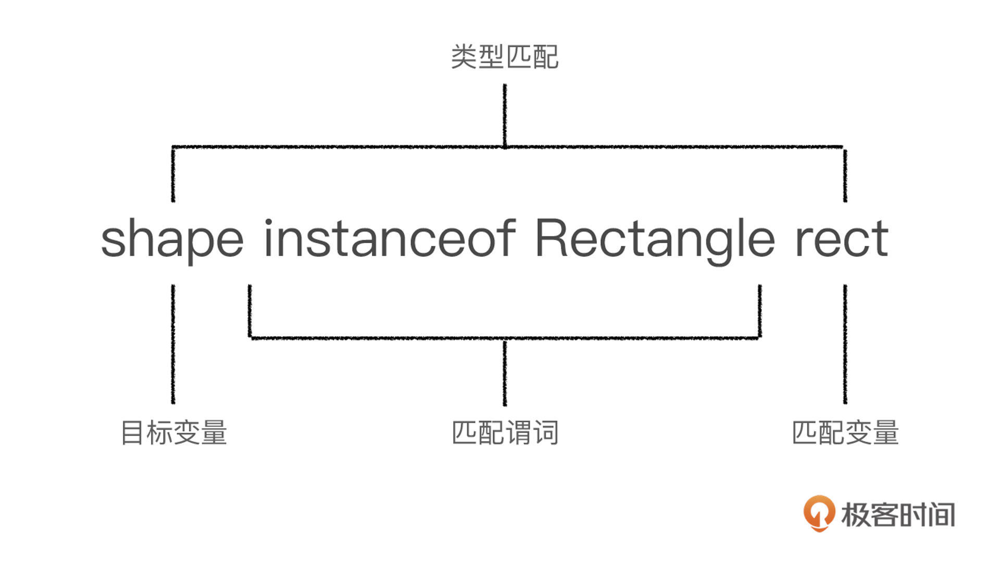

- 00 开篇词 拥抱Java新特性，像设计者一样工作和思考.md.html
- 01 JShell：怎么快速验证简单的小问题？.md.html
- 02 文字块：怎么编写所见即所得的字符串？.md.html
- 03 档案类：怎么精简地表达不可变数据？.md.html
- 04 封闭类：怎么刹住失控的扩展性？.md.html
- 05 类型匹配：怎么切除臃肿的强制转换？.md.html
- 06 switch表达式：怎么简化多情景操作？.md.html
- 07 switch匹配：能不能适配不同的类型？.md.html
- 08 抛出异常，是不是错误处理的第一选择？.md.html
- 09 异常恢复，付出的代价能不能少一点？.md.html
- 10 Flow，是异步编程的终极选择吗？.md.html
- 11 矢量运算：Java的机器学习要来了吗？.md.html
- 12 外部内存接口：零拷贝的障碍还有多少？.md.html
- 13 外部函数接口，能不能取代Java本地接口？.md.html
- 14 禁止空指针，该怎么避免崩溃的空指针？.md.html
- 15 现代密码：你用的加密算法过时了吗？.md.html
- 16 改进的废弃，怎么避免使用废弃的特性？.md.html
- 17 模块系统：为什么Java需要模块化？.md.html
- 18 模块系统：怎么模块化你的应用程序？.md.html
- 用户故事 与新特性开发者对话.md.html
- 用户故事 保持好奇心，积极拥抱变化.md.html
- 捐赠
05 类型匹配：怎么切除臃肿的强制转换？
你好，我是范学雷。今天，我们聊一聊Java模式匹配，主要是类型匹配。
Java的模式匹配是一个新型的、而且还在持续快速演进的领域。类型匹配是模式匹配的一个规范。类型匹配这个特性，首先在JDK 14中以预览版的形式发布。在JDK 15中，改进的类型匹配再次以预览版的形式发布。最后，类型匹配在JDK 16正式发布。
那么，什么是模式匹配，什么又是类型匹配呢？这就要说到模式的组成。通常，一个模式是匹配谓词和匹配变量的组合。其中，匹配谓词用来确定模式和目标是否匹配。在模式和目标匹配的情况下，匹配变量是从匹配目标里提取出来的一个或者多个变量。
对于类型匹配来说，匹配谓词用来指定模式的数据类型，而匹配变量就是一个属于该类型的数据变量。需要注意的是，对于类型匹配来说，匹配变量只有一个。
这样的描述还是太抽象，太难理解。我们还是通过案例和代码，一点一点地来理解类型匹配吧。
阅读案例
在程序员的日常工作中，一个重要的事情，就是把相似的东西抽象出来，设计成一个通用的、可以复用的接口。
比如说，我们从正方形、长方形、圆形这些看起来差异巨大的东西出发，抽象出了形状这个接口。我们希望使用一个实例时，如果我们不能确定它是正方形还是长方形，我们至少还能确定它是一个形状。这种模模糊糊的确定性（其实也是不确定性），其实对我们编写代码有巨大的帮助，包括但是不限于简化代码逻辑，减少代码错误。
但要注意的是，每一个实例都是具体的形状。它可以是正方形的对象，可以是长方形的对象，就是不能是一个抽象的形状。也就是说，抽象的类和接口不能直接实例化。
一个方法的规范，它的输入参数可能是一个表示形状的对象，也可能是一个更一般化的对象。比如说吧，我们要设计一个方法，来判断一个形状是不是正方形。那么，就需要一个表示形状的对象，作为这个方法的输入参数。而实现这个方法的代码，仅仅知道形状这个一般化的对象是远远不够的。下面的代码，就是一个这种方法的实现代码。
static boolean isSquare(Shape shape) {
if (shape instanceof Rectangle) {
Rectangle rect = (Rectangle) shape;
return (rect.length == rect.width);
}
return (shape instanceof Square);
}
在这个isSquare方法的实现代码里，我们需要使用instanceof运算符，来判断输入参数是不是一个长方形的实例；如果判断成立，再使用类型转换运算符，把这个实例投射成长方形的实例；最后，我们开始使用这个长方形的实例，进行更多的运算。
其实，这样的操作是一个模式化的过程。如果我们把它揉碎了来看，这个模式有三个部分。
第一个部分是类型判断语句，也就是匹配谓词，使用的代码是“instanceof Rectangle”。第二个部分是类型转换语句，使用的是类型转换运算符（(Rectangle) shape）。第三个部分是声明一个新的本地变量，也就是匹配变量，来承载转换后的数据，使用的是变量声明和赋值运算符（Rectangle rect =）。第二个部分和第三个部分，只有在类型判断成立的情况下，才能够执行。
使用这样的模式化操作，是一个Java程序员的基本功。这个模式直观而且便于理解。可是，这个模式很乏味，也很臃肿。调用了instanceof之后，除了类型转换之外，我们还可以做什么呢？一般情况下，在类型判断之后，我们总是紧跟着就进行类型转换。
把类型判断和类型转换切割成两个部分，增加了错误潜入的机会，平添了许多烦恼。比如说，一个活生生的程序员或者冷冰冰的机器，有可能无意地使用了错误的类型。下面例子中的两段代码，就是两个常见的类型转换错误。第一段代码误用了变量类型，第二段代码误用了判断结果。
if (shape instanceof Circle) {
Rectangle rect = (Rectangle) shape;
return (rect.length == rect.width);
}
if (!(shape instanceof Rectangle) {
Rectangle rect = (Rectangle) shape;
return (rect.length == rect.width);
}
类型判断之后，我们原本就可以开始关注更重要的后续代码逻辑了，但现在不得不停下来编写类型转化代码，或者审视类型转换代码是否恰当。这当然影响力了生产效率。
我们可以用什么方法改进这个模式，提高生产效率呢？ 这个问题的答案就是类型匹配。
类型匹配
那么，类型匹配是怎么改进这个模式的呢？我们先来看看使用了类型匹配的代码的样子。下面的例子，就是使用类型匹配的一段代码。
if (shape instanceof Rectangle rect) {
return (rect.length == rect.width);
}
为了便于更直观地比较，我把传统的实现代码和使用了类型匹配的实现代码列在了下面的表格里。你可以找找其中的差异，体会下类型匹配带来的改进。

就像我们前面拆解的一样，传统的实现代码有三个部分；而使用类型匹配的代码，只有匹配谓词和本地变量两个部分，而且是在同一个语句里。为了帮助你理解这些概念，我画了下面的这张图，标记出了类型匹配的组成部分和关键概念。

你可能已经注意到了，使用类型转换运算符的语句，没有出现在使用类型匹配的代码里。但是，这并不影响类型匹配代码所要表达的基本逻辑。
这个基本逻辑就是：如果目标变量是一个长方形的实例，那么这个目标变量就会被赋值给一个本地的长方形变量，也就是我们所说的匹配变量；相反，如果目标变量不是一个长方形的实例，那么这个匹配变量就不会被赋值。
前面，我们讨论了两个常见的类型转换错误：误用变量类型和误用判断结果。在使用类型匹配的代码里，不再需要重复使用匹配类型，也不再需要使用强制类型转换符。所以，使用类型匹配的代码，不用再担心误用变量类型的错误了。
误用判断结果的错误，是不是也被解决了呢？ 似乎，我们还能写出下面的代码。在这样的代码里，如果目标变量不是一个长方形的实例，我们是不是也有可能使用匹配的变量呢？
if (!(shape instanceof Rectangle rect)) {
return (rect.length == rect.width);
}
幸运的是，类型匹配已经考虑到了这个问题，Java编译器能够检测出上面的错误，不会允许使用没有赋值的匹配变量。这样，在代码编译期间，就有机会纠正代码的错误。比如说，我们可以尝试修改成下面的逻辑：如果目标变量不是一个长方形的实例，我们就不使用匹配变量；否则，我们就使用匹配变量。把这个逻辑映射到代码，大致是下面的样子。
if (!(shape instanceof Rectangle rect)) {
return false;
} else {
return (rect.length == rect.width);
}
在上面的代码里，使用匹配变量的条件语句else分支并没有声明这个匹配变量。为什么if语句声明的变量，可以在else语句里使用呢？要弄清楚这个问题，我们还要了解匹配变量的作用域。掌握匹配变量的作用域，是学会使用类型匹配的关键。
匹配变量的作用域
匹配变量的作用域，就是目标变量可以被确认匹配的范围。如果在一个范围内，无法确认目标变量是否被匹配，或者目标变量不能被匹配，都不能使用匹配变量。 如果我们从编译器的角度去理解，也就是说，在一个范围里，如果编译器能够确定匹配变量已经被赋值了，那么它就可以在这个范围内使用；如果编译器不能够确定匹配变量是否被赋值，或者确定没有被赋值，那么他就不能在这个范围内使用。
我们还是通过代码来理解这个有点抽象的概念吧。
第一段代码，我们看看最常规的使用。我们可以在确认类型匹配的条件语句之内使用匹配变量。这个条件语句之外，不是匹配变量的作用域。
public static boolean isSquareImplA(Shape shape) {
if (shape instanceof Rectangle rect) {
// rect is in scope
return rect.length() == rect.width();
}
// rect is not in scope here
return shape instanceof Square;
}
第二段代码，我们看看有点意外的使用。我们可以在确认类型不匹配的条件语句之后使用匹配变量。这个条件语句之内，不是匹配变量的作用域。
public static boolean isSquareImplB(Shape shape) {
if (!(shape instanceof Rectangle rect)) {
// rect is not in scope here
return shape instanceof Square;
}
// rect is in scope
return rect.length() == rect.width();
}
第三段代码，我们看看紧凑的方式。这一段代码的逻辑，和第一段代码一样，我们只是换成了一种更紧凑的表示方法。
在这一段代码里，我们使用逻辑与运算符表示第一段里的条件语句：类型匹配并且匹配变量满足某一个条件。这样的表示是符合匹配变量的作用域规则的。逻辑与运算符从左到右计算，只有第一个运算成立，也就是类型匹配，才能进行下一个运算。所以，我们可以在逻辑与运算的第二部分，使用匹配变量。
public static boolean isSquareImplC(Shape shape) {
return shape instanceof Square || // rect is not in scope here
(shape instanceof Rectangle rect &&
rect.length() == rect.width()); // rect is in scope here
}
第四段代码，我们看看逻辑或运算。它类似于第三段代码，只是我们把逻辑与运算符替换成了逻辑或运算符。这时候的逻辑，就变成了“类型匹配或者匹配变量满足某一个条件”。逻辑或运算符也是从左到右计算。
不过和逻辑与运算符不同的是，一般来说，只有第一个运算不成立，也就是说类型不匹配时，才能进行下一步的运算。下一步的运算，匹配变量并没有被赋值，我们不能够在这一部分使用匹配变量。所以，这一段代码并不能通过编译器的审查。
public static boolean isSquareImplD(Shape shape) {
return shape instanceof Square || // rect is not in scope here
(shape instanceof Rectangle rect ||
rect.length() == rect.width()); // rect is not in scope here
}
第五段代码，我们看看位与运算。
这段代码和第三段代码类似，只是我们把逻辑与运算符（&&）替换成了位与运算符（&）。
和第三段代码相比，这一段代码的逻辑其实并没有变化。只不过，位与运算符两侧的表达式都要参与计算。也就是说，不管位与运算符左侧的运算是否成立，位与运算符右侧的运算都要计算出来。换句话说，无论左侧的类型匹配不匹配，右侧的匹配变量都要使用。这就违反了匹配变量的作用域原则，编译器不能够确定匹配变量是否被赋值。所以，这一段代码，也不能通过编译器的审查。
public static boolean isSquareImplE(Shape shape) {
return shape instanceof Square | // rect is not in scope here
(shape instanceof Rectangle rect &
rect.length() == rect.width()); // rect is in scope here
}
第六段代码，我们把匹配变量的作用域的影响延展一下，看看它对影子变量（Shadowed Variable）的影响。
既然我们讨论变量的作用域，我们就不能不看看影子变量。假设我们定义了一个静态变量，它和匹配变量使用相同的名字。在匹配变量的作用域内，除非特殊处理，这个静态变量就被遮掩住了。这时候，这个变量名字代表的就是匹配变量；而不是静态变量。类似地，在匹配变量的作用域之外，这个变量名字代表的就是这个静态变量。
在这段代码里，我们使用类似于第一段代码的代码组织方式，来表述类型匹配部分的逻辑。另外，我在代码里标注了变量的作用域。你可以看看，这两个变量的作用域，和你想象的作用域是不是一样的？
public final class Shadow {
private static final Rectangle rect = null;
public static boolean isSquare(Shape shape) {
if (shape instanceof Rectangle rect) {
// Field rect is shadowed, local rect is in scope
System.out.println("This should be the local rect: " + rect);
return rect.length() == rect.width();
}
// Field rect is in scope, local rect is not in scope here
System.out.println("This should be the field rect: " + rect);
return shape instanceof Shape.Square;
}
}
第七段代码，我们还是来看一看影子变量。只不过，这一次，我们使用类似于第二段代码的代码组织方式，来表述类型匹配部分的逻辑。我在代码里标出的这两个变量的作用域，和你想象的作用域是一样的吗？
public final class Shadow {
private static final Rectangle rect = null;
public static boolean isSquare(Shape shape) {
if (!(shape instanceof Rectangle rect)) {
// Field rect is in scope, local rect is not in scope here
System.out.println("This should be the field rect: " + rect);
return shape instanceof Shape.Square;
}
// Field rect is shadowed, local rect is in scope
System.out.println("This should be the local rect: " + rect);
return rect.length() == rect.width();
}
}
如果回头看看这七段代码，你会倾向于哪一种编码的风格？我们把这些代码放在一起，分析一下它们的特点。
第四段和第五段代码，不能通过编译器的审查，所以我们不能使用这两种编码方式。
第二段和第七段代码，匹配变量的作用域，远离了类型匹配语句。这种距离上的疏远，无论在视觉上还是心理上，都不是很舒适的选择。不舒适，就给错误留下了空间，不容易编码，也不容易排错。这种代码逻辑和语法上都没有问题，但是不太容易阅读。
第一段和第六段代码，匹配变量的作用域，紧跟着类型匹配语句。这是我们感觉舒适的代码布局，也是最安全的代码布局，不容易出错，也容易阅读。
第三段代码，它的匹配变量的作用域也是紧跟着类型匹配语句。只不过，这种代码的编排方式不太容易阅读，阅读者需要认真拆解每一个条件，才能确认逻辑是正确的。相对于第一段和第六段代码，第三段代码的组织方式，是一个次优的选择。
如果你学习过《代码精进之路》专栏，我想你会理解代码组织方式的重要性，并且能够有意识地选择简单、安全的组织方式。对于类型匹配来说，第一段和第六段代码的组织方式，是我们喜欢的方式。
实例匹配的红利
在快要结束本文写作的时候，我还是忍不住测试了一下实例匹配的性能。在我自己的笔记本电脑上，和使用类型转换运算符的代码相比，使用实例匹配代码的吞吐量提高了将近20%。这是一个巨大的性能提升。我知道使用实例匹配会提高性能，但是没想到有这么大的提升。除了主要目标之外，这也算是使用实例匹配的一个红利吧。
Benchmark Mode Cnt Score Error Units
PatternBench.useCast thrpt 15 263559326.599 ± 78815341.366 ops/s
PatternBench.usePattern thrpt 15 313458467.044 ± 2666412.767 ops/s
总结
好，这节课的内容到这里就要结束了，我来做个小结。从前面的讨论中，我们了解了Java的模式匹配和Java的类型匹配，讨论了Java类型匹配要解决的问题、表现的形式，以及匹配变量的作用域。顺便，我们还讨论了我们喜欢的类型匹配代码的组织方式。
在我们日常的编码实践中，为了简化代码逻辑，减少代码错误，提高生产效率，我们应该优先考虑使用类型匹配，而不是传统的强制类型转换运算符。
如果你想要丰富你的代码评审清单，有了Java类型匹配后，你可以加入下面这一条：
如果需要类型转换，是不是可以使用类型匹配？
另外，我在今天的讨论中拎出了几个技术要点，这些都可能在你们面试中出现哦。通过这一次学习，你应该能够：
- 知道Java支持类型匹配，并且能够使用类型匹配，替换掉传统的强制类型转换运算。
- 面试问题：你知道类型匹配吗？会不会使用它？
- 了解类型匹配的原理和它要解决的问题，知道匹配变量的作用域。
- 面试问题：使用类型匹配有哪些好处？匹配变量什么时候可以使用？
- 了解类型匹配的代码组织方式，能够有意识地使用简单、安全的代码组织方式。
- 面试问题：你写的这段代码（如果使用了类型匹配），还有更好的表达方式吗？
如果你能够有意识地使用Java的类型匹配，并且有能力选择简单、安全的代码组织方式，你应该能够大幅度提高编码的效率和质量，提高代码的性能。毫无疑问，在面试的时候，这也是一个能够让你与众不同的知识点。
思考题
在“匹配变量的作用域”这一小节里，我们列举了7种实例匹配的代码组织方式。除了第四段代码和第五段代码，其他的五种代码都可以通过编译。为了加深你的印象，我们要动动手，验证一下每一种代码组织方式下，匹配变量的作用域。
我在下面的例子中写了一个代码小样，使用打印语句输出来验证结果。你可以试着修改成你喜欢的样子，添加更多的代码组织方式。
/*
* Copyright (c) 2021, Xuelei Fan. All rights reserved.
* DO NOT ALTER OR REMOVE COPYRIGHT NOTICES OR THIS FILE HEADER.
*/
package co.ivi.jus.instance.review.xuelei;
public sealed interface Shape
permits Shape.Circle, Shape.Rectangle, Shape.Square {
Shape.Rectangle rect = null; // field variable
record Circle(double radius) implements Shape {
// blank
}
record Square(double side) implements Shape {
// blank
}
record Rectangle(double length, double width) implements Shape {
// blank
}
static void main(String[] args) {
Shape shape = new Shape.Rectangle(10, 10);
System.out.println("It should be ture that " + shape +
" is a square: " + isSquare(shape));
System.out.println();
shape = new Shape.Circle(10);
System.out.println("It cannot be ture that " + shape +
" is a square: " + (!isSquare(shape)));
}
static boolean isSquare(Shape shape) {
if (shape instanceof Rectangle rect) {
// Field rect is shadowed, local rect is in scope
System.out.println(
"This should be the local rect: " +
rect.equals(shape));
return (rect.length == rect.width);
}
// Field rect is in scope, local rect is not in scope here
System.out.println(
"This should be the field rect: " + (rect == null));
return (shape instanceof Square);
}
}
欢迎你在留言区留言、讨论，分享你的阅读体验以及验证的代码和结果。
注：本文使用的完整的代码可以从GitHub下载，你可以通过修改GitHub上review template代码，完成这次的思考题。如果你想要分享你的修改或者想听听评审的意见，请提交一个 GitHub的拉取请求（Pull Request），并把拉取请求的地址贴到留言里。这一小节的拉取请求代码，请在实例匹配专用的代码评审目录下，建一个以你的名字命名的子目录，代码放到你专有的子目录里。比如，我的代码，就放在instance/review/xuelei的目录下面。
注：本文使用的基准性能测试代码，你也可以从GitHub上下载，试试你的机器是不是也有相似的性能表现。
© 2019 - 2023 Liangliang Lee. Powered by gin and hexo-theme-book.